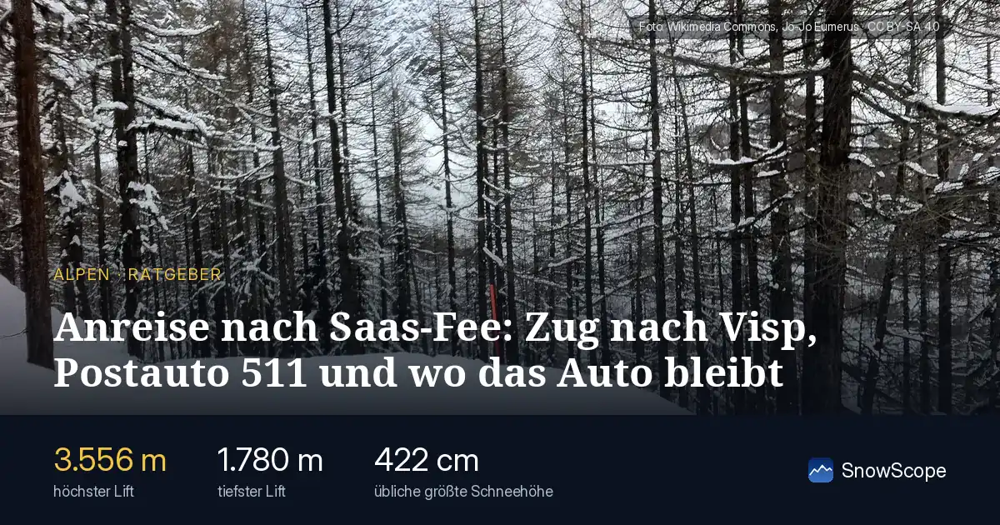
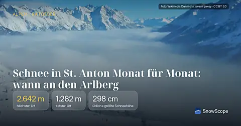

Anreise nach Saas-Fee: Zug nach Visp, Postauto 511 und wo das Auto bleibt
Saas-Fee ist ein autofreies Resort auf 1.780 m, umgeben von 13 Viertausendern und vier Bergpässen, die bestimmen, wie du ankommst. Ob du mit Zug und Bus fährst oder dein Auto nimmst – die letzte Strecke legst du zu Fuß oder mit dem kostenlosen Dorf-Shuttle zurück, sobald du im Tal angekommen bist.
Die Live-Schneeprognose für Saas Fee in der SnowScope-AppSchneehöhen, Pulverschnee-Alarme und 3D-Karte, gratis.
Zug und Bus: die schnellste Route von den meisten Flughäfen
Von den Flughäfen Zürich, Genf, Basel und Mailand fahren Züge hinunter nach Visp im Rhônetal. Die Fahrt dauert von Zürich aus etwa zweieinhalb Stunden. Am Bahnhof Visp fährt die PostBus-Linie 511 alle 30 Minuten ab und führt dich südlich ins Saastal und hinauf nach Saas-Fee. Die ganze Reise von einem großen Flughafen dauert rund drei Stunden.
Die Schweizerischen Bundesbahnen bieten reduzierte Supersaver-Tickets an, wenn du im Voraus buchst. Wenn du am Busbahnhof Saas-Fee ankommst, ist das Dorf klein genug zum Spazieren, und die Skibus-Fahrten zu den Liften sind kostenlos für alle Fahrgäste.
Mit dem Auto: vier Pässe, eine Talstraße
Wenn du fährst, führen dich vier Routen nach Visp und dann südlich nach Saas-Fee. Von Norden über Bern bringt die Lötschberg-Autobahn-Bahn dein Auto durch den Berg, mit Zügen bis zu sechsmal pro Stunde in jede Richtung. Von Osten bietet der Furka-Pass eine offene Straßenroute. Von Süden und Italien verbindet dich der Simplon-Pass mit dem Rhônetal. Von Westen führt die Talstraße entlang der Rhône durch Lausanne hinunter nach Visp.
Südlich von Visp folgst du den Schildern in Richtung Saas-Almagell. Am Kreisverkehr Killerhof bei Stalden nimmst du die zweite Ausfahrt in Richtung Saas-Fee. In Saas-Grund biegst du nach der Kirche rechts ab und fährst hinauf ins Saastal. Die Straße wird enger, während sie sich nach oben windet.

Parkiere am Eingang, dann fährst du kostenlos drinnen
Keine Privatwagen fahren nach Saas-Fee selbst. Große Parkplätze liegen am Dorfeingang. Das Tourismusbüro veröffentlicht detaillierte Parkplatz-Informationen und Updates über temporäre Sperrungen wegen Schnee oder Bauarbeiten. Lokale Nachrichtenkanäle posten auch Meldungen über die Zufahrt.
Nach dem Parken nutzt du die kostenlosen Dorf-Busse und Ski-Shuttle. Dazu gehören Haltestellen an der Alpin Express-Liftstation, dem Busbahnhof, dem Hochgaragen-Parkhaus und dem Nordparkplatz. Während der Vorsaison (31. Oktober bis 18. Dezember 2026) und wieder vom 19. Dezember 2026 bis 18. April 2027 verbinden E-Busse auch Nachbardörfer wie Saas-Grund und Saas-Almagell direkt mit Saas-Fee. Andere Talbusse kosten, es sei denn, du hast eine SaastalCard.
Was die Zahlen zeigen: ein langer, schneereicher Winter
Über 46 vergangene Winter hinweg hatte Saas-Fee auf mittlerer Höhe (2.668 m) einen typischen Saisonhöchststand von 178 cm, mit Schnee am Boden für etwa 260 Tage pro Winter. Der tiefste Schnee fällt normalerweise im März. Am Talgrund (1.780 m) sind die Zahlen niedriger: ein typischer Höchststand von 92 cm und 228 Schneetage, mit dem meisten Schnee oft im Februar.
Die höchsten Lagen, um 3.556 m, erzählen eine andere Geschichte. Dort erreicht die typische maximale Schneehöhe 422 cm, und Schnee kommt oft Ende September und bleibt bis Anfang Juli. Dieser Höhenvorteil ist der Grund, warum das Resort den Schnee bis ins Frühjahr und Frühsommer hält.
Wetterverzögerungen: Plane deine Fahrtzeit sorgfältig
Die Pässe Lötschberg, Furka und Simplon können bei starkem Schneefall oder Lawinengefahr gesperrt sein. Wenn du fährst, gib dir Zeit für Verzögerungen und prüfe den Straßenstatus vor der Abfahrt und nochmal bevor du wieder hinunter fährst. Das gleiche gilt für PostBus 511: Winterstürme können die Fahrt verlangsamen, also plane extra Zeit ein und stelle sicher, dass du einen vollen Tank oder volle Ladung hast.
Winterreifenvorschriften gelten auf allen vier Pässen und den Zufahrten. Überprüfe deine Reifenkennzeichnung und Profiltiefe, bevor du losfährst, besonders wenn du ein Auto mietest. Das Tal und das Dorf selbst sind normalerweise erreichbar, aber Schneeräumung ist eine ständige Aufgabe in dieser Höhe.
Beste Ankunftszeit und was du mitnehmen solltest
November ist Vorsaison; Schnee am Talgrund wächst noch (frühere Winter zeigen typisch 13 cm Mitte November). Mittlere Lagen und Höhen halten mehr, aber Bedingungen können dünn und veränderlich sein. Bis Dezember hat der Talgrund normalerweise 35 cm, und die Höhen 150 cm, was das Resort zuverlässiger macht. Januar bis März bieten den tiefsten und stabilsten Schnee.
Ob du mit Zug oder Auto reist – bringe warme Schichten, Sonnenschutz und eine Wasserflasche mit. Wenn du fährst, packe Vorräte für den Tag ein: Sprit, Wasser und Snacks. Die Fahrt ist nicht lang, aber Bergwetter ändert sich schnell und du könntest verzögert sein.
Tipps für Skifahrer
- Du nimmst den Zug? Kaufe dein Ticket bis Saas-Fee auf der SBB-Website und steige am Bahnhof Visp direkt in die PostBus 511 ein, ohne die Plattform zu wechseln.
- Du fährst die Lötschberg-Autobahn-Bahn im Winter? Prüfe die Wartezeiten und buche einen Platz im Voraus auf der BLS-Website, um Verzögerungen zu vermeiden.
- Stelle dein Auto für die gesamte Dauer in den Parkplätzen am Eingang ab. Die kostenlosen Busse im Dorf und zu den Liften machen eine zweite Fahrt in die Stadt unnötig und sparen dir Parkgebühren.
- Winterreifen sind auf allen vier Bergpässen von November bis April Pflicht. Wenn du mietest, bestätige, dass dein Auto 3PMSF-bewertete Winterreifen an allen vier Rädern hat oder führe Ketten und Schneesocken mit.
- Für Tiefschnee und Gletscher-Touren: Konsultiere das aktuellste SLF-Lawinenbulletin auf slf.ch und stelle immer einen qualifizierten Bergführer ein.
Zu diesen Zahlen
Die Schneehöhen der Skigebiete sind der meiste Schnee in den oberen Hängen am angegebenen Tag; es sind Schätzungen für eine Fläche, keine Messung an einem Punkt. Prognosen können sich ändern. Lies vor dem Freeriden immer den offiziellen Lawinenlagebericht.
Offizielle Lawinenlageberichte: WSL-SLF
Diesen Bericht zitieren
Für Forschung, Lehre oder Presse: Zahlen und Grafiken sind unter CC BY 4.0 mit dieser Quellenangabe frei nutzbar.
SnowScope (2026), Anreise nach Saas-Fee: Zug nach Visp, Postauto 511 und wo das Auto bleibt, https://snowscope.app/blog/de/2026/11/how-to-get-to-saas-fee-train-postbus-car-free.html, abgerufen am 2026-11-09
SnowScope (Atlas Labs). (2026, November 9). Anreise nach Saas-Fee: Zug nach Visp, Postauto 511 und wo das Auto bleibt. SnowScope snow reports. https://snowscope.app/blog/de/2026/11/how-to-get-to-saas-fee-train-postbus-car-free.html
BibTeX
@misc{snowscope2026howtogettosaasfeetrainpo,
author = {{SnowScope (Atlas Labs)}},
title = {Anreise nach Saas-Fee: Zug nach Visp, Postauto 511 und wo das Auto bleibt},
year = {2026},
month = nov,
howpublished = {\url{https://snowscope.app/blog/de/2026/11/how-to-get-to-saas-fee-train-postbus-car-free.html}},
note = {Published 2026-11-09 14:31 UTC; accessed 2026-11-09}
}· CC BY 4.0 · Methoden, Daten und Werkzeuge →
Saas Fee: Schnee und Temperatur nach Höhe, dieser Winter vs letzter (Werkzeuge) →
Saas Fee folgen
Gratis: eine Nachricht, wenn Neuschnee kommt, und jeden Morgen die Vorhersage.
Weitere Schneeberichte

Bonneval-sur-Arc liegt auf 1.794 m im hohen Arc-Tal, im Winter durch den Iseran abgeschnitten. Die Schneehöhe reicht von 99 cm in der Talstation bis 335 cm am Berg. Daten aus 46 vergangenen Wintern, November 2026.

St. Anton und Ski Arlberg durch den Winter: die übliche Schneehöhe pro Monat auf drei Höhen, aus 46 vergangenen Wintern.